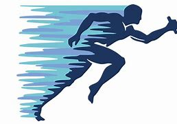

Além das Linhas: A Jornada Inesquecível dos Atletas
13 de junho 2023
Nos esportes, encontramos uma fonte inesgotável de superação e inspiração. Atletas desafiam seus limites, conquistam feitos extraordinários e nos mostram o poder do comprometimento e da resiliência. Além disso, os esportes promovem a união e o respeito mútuo, transcendo barreiras e construindo uma comunidade global. Eles são uma celebração do potencial humano e um lembrete constante de que, com dedicação e determinação, podemos alcançar grandes conquistas
Vencendo pela Paixão: Histórias de Superação no Mundo dos Esportes
13 de junho 2023

Supere seus limites, vença seus medos e conquiste o pódio!
Voando alto, conquistando o impossível.
25 de junho.

conquistando uma coisa por vez!
Site sobre esportes.

Site criado com o intuito de ensinar determinados esportes!!
Top 6 Esportes:


Informacões sobre os criadores:
Nomes:
Enrique Joaquin Cardoso;
Francisco Vargas Neto;
Higor do Amaral Fritz;
Rafael Pierlger.
Email`s:
enrique@gmail.com;francisco@gmail.com;
higoramaral@gmail.com;
rafael@gmail.com.
Cursando:
Enrique Joaquin Cardoso(Técnico em Informatica);
Francisco Vargas Netoo(Técnico em Informatica);
Higor do Amaral Fritzo(Técnico em Informatica);
Rafael Pierlgero(Técnico em Informatica).
Endereço:
BR 280 Km Vinte e Sete 5200, Araquari, SC, 89245-000.